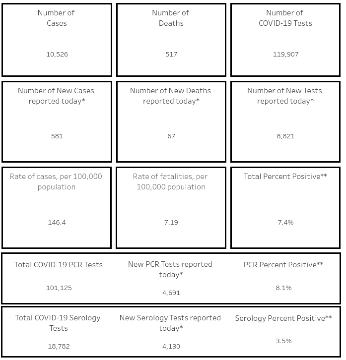
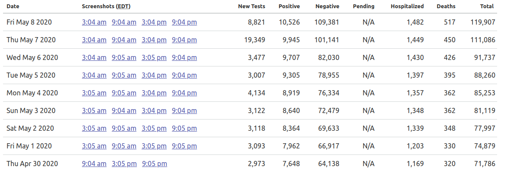

Tracking antibody test data in AZ
Issue number 398
WilliamsLisa opened this issue on May 9, 2020 at 8:17 am
Arizona is now mixing antibody tests with PCR tests. Covid Tracking is showing a large increase in new tests on Thursday May 7. That increase is due to adding in serological tests. Covid Tracking should pull the “Total COVID-19 PCR Tests” rather than “Number of COVID-19 Tests”. The latter number reflects PCR + Serological tests. Serological tests cannot be counted as cases without PCR confirmation. So Covid19 Tracking is making it look like there is a very large increase in PCR testing of infection that does not exist. 
The answer is no. They were not reporting combined serology tests prior to 5/5. Here is the blog post of the first day that they began reporting it on 5/5. https://directorsblog.health.azdhs.gov/covid-19-dashboard-now-includes-data-about-antibody-testing/ Look at you data difference between 5/6 and 5/7. 14k new tests were added. The change is very obvious. Look at your screenshot differences between those days. This is a very simple and obvious change. I am not sure why you dismissed and closed this so easily.
You can see a relatively constant 3-4k new test per day. Then on 5/7 19k new tests. That is when all of the serology tests came in. The next day there was 8k tests because about half are serology. 
Hi @WilliamsLisa! We’re sorry that we made it seem that this is being dismissed. The issue is very much under discussion and we’re approaching a solution for our reporting. We want to report data as consistently as possible across all states. We’d prefer to keep reporting these numbers and fix our historicals later once we’re sure of a solution. We definitely do not want to mix PCR and antibody tests, so expect a fix soon.
Here is an update: We have revised historicals accordingly for AZ, and have implemented (since 5/7) new data entry procedures to separate out and capture both data types.
Before:
 After:
After:
 It took a while but we want to be sure of our information, while additionally also trying to standardize this reporting across all states. Thank you very much for your input and look for a more meaty update on our website.
It took a while but we want to be sure of our information, while additionally also trying to standardize this reporting across all states. Thank you very much for your input and look for a more meaty update on our website.
Thank you for your input @WilliamsLisa! We are aware of the testing changes and have tracked these numbers. We’re also working internally to best represent these numbers in our next update. Our biggest concern at this point is whether AZ had been reporting combined antibody and PCR tests even before 5/8. Unfortunately, as states change their data definitions, we have to make difficult choices to keep our data consistent. We are working our best to seek clarification on these issues and work towards a solution. We’ll keep in touch!